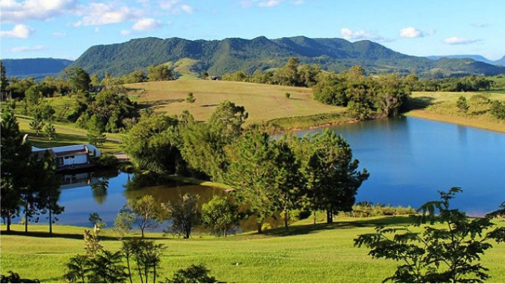
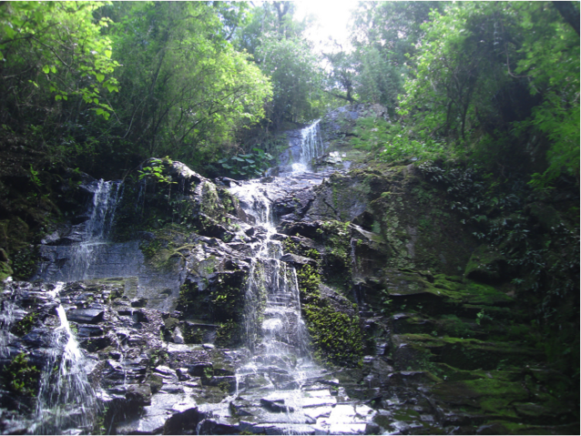
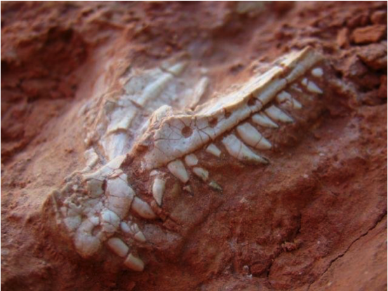
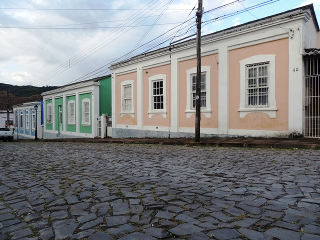

Santa Maria is called the "Heart of the Rio Grande" due to its central location in Rio Grande do Sul, facilitating the coming of students and researchers from different state regions. It is located approximately 280 km from Porto Alegre and has temperatures ranging from 11 to 22°C in September. As a university city, Santa Maria is known for its vibrant nightlife, attracting young students from various university centers. The city also has an extensive hotel infrastructure (including hotels, inns, and hostels), with accommodation options close to the university and fast and easy transportation.
Below is information about the main tourist attractions that can be visited in Santa Maria during the event period.
Fourth Colony of Italian Immigration: fourth centre of Italian colonization and the first outside the Serra Gaúcha, it was created in 1877 and includes the current municipalities of Silveira Martins, Ivorá, Faxinal do Soturno, Dona Francisca, Nova Palma, Pinhal Grande, and São João do Polêsine, as well as parts of the municipalities of Agudo, Itaara, Restinga Seca. It is a touristic region rich in culture with its attractions, visits to churches, typical constructions, restaurants, shopping for colonial products, and the beautiful view of the mountains.

Extreme Sports: Santa Maria is a place rich in natural beauty. There are hundreds of waterfalls, cascades and trails where adventure sports can be practiced such as: trekking (trails), rappelling, cascading (waterfall rappelling), mountain biking, adventure racing, orienteering and zip-lining. The hills and forests that surround the municipality of Santa Maria hide many beautiful and at the same time challenging places because they are places that have not been explored by man, which makes these places even more enchanting.

Sanga da Alemoa: the Alemoa Sanga Paleontological Site is one of Brazil's most important paleontological sites. From this place, the Estauricosaurus, the first Brazilian dinosaur and one of the oldest found in the world, came out.

Vila Belga: the historical and cultural heritage of the municipality, the village is considered the first housing complex in the State and was projected between 1901-1903 by the Belgian engineer Gustave Vauthier, who at that time was the director of the company ‘Compagnie Auxiliaire des Chemins de Fer au Brésil‘. It has belle époque style houses that were used as residences for Viação Ferrea do Estado employees.